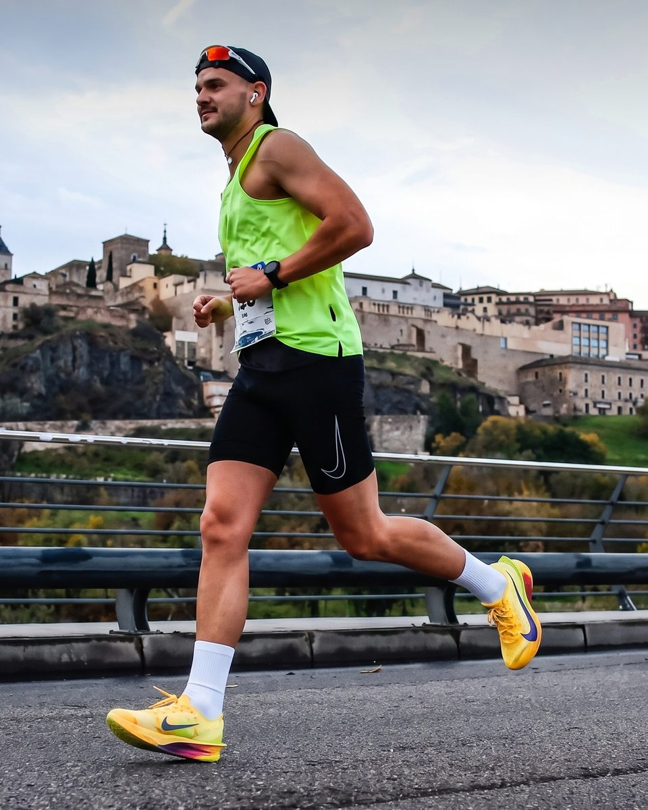

01
CONOCER
Partimos de tu experiencia, tus objetivos, tu disponibilidad, tu historial y el punto en el que estás ahora.
DATA-DRIVEN ENDURANCE
Entrenamiento de resistencia con estructura, análisis y sentido. Para quienes quieren llegar más lejos sin dejar de lado su vida.
01 / EL MÉTODO
La mejora no sale de acumular sesiones sin dirección. Sale de combinar una planificación realista, una carga progresiva y decisiones informadas.
Partimos de tu experiencia, tus objetivos, tu disponibilidad, tu historial y el punto en el que estás ahora.
Ordenamos natación, ciclismo, carrera y fuerza para que cada sesión tenga un propósito y encaje en tu semana. Lo recibes en tu calendario de TrainingPeaks.
Interpretamos en TrainingPeaks ritmo, frecuencia cardiaca, potencia y carga. Los datos ayudan a entender el entrenamiento, no sustituyen tus sensaciones.
Revisamos la respuesta a la carga y adaptamos el plan cuando cambian tu agenda, tu recuperación o tus prioridades.
02 / QUÉ HACEMOS
Una propuesta online para deportistas de resistencia que necesitan compatibilizar el entrenamiento con el trabajo, la familia y el resto de su vida. Todo el servicio se gestiona con TrainingPeaks: tu semana de entrenamiento, ordenada en un calendario.
Técnica, eficiencia, continuidad y control del ritmo. La sesión se adapta a tu nivel y al tiempo real que puedes dedicar a la piscina.
Resistencia, trabajo por zonas y desarrollo de la capacidad de sostener el esfuerzo. Cuando hay datos de potencia, los integramos en el análisis.
Progresión de volumen e intensidad, ritmos ajustados al objetivo y gestión de la fatiga para construir consistencia.
Trabajo complementario y distribución de descansos para apoyar la carga de resistencia y mantener una preparación equilibrada.
TU DEPORTE
El método es el mismo para cualquier deporte de resistencia: conocer, planificar, medir y ajustar. Elige el tuyo.
SWIM / BIKE / RUN
Natación, ciclismo, carrera y fuerza en un único plan que encaja en tu semana. De sprint a larga distancia.
Ver planes ↗5K / 10K / 21K / 42K / TRAIL
Ritmos reales, carga progresiva y rodajes suaves de verdad. Del primer 10K al maratón.
Planes para corredores ↗CICLISMO / REMO / ESQUÍ DE FONDO
Ciclismo por potencia y zonas, u otros deportes de resistencia. Cuéntame tu objetivo y vemos cómo plantearlo.
Cuéntame tu objetivo ↗THE LONG GAME
No necesitas semanas perfectas. Necesitas un sistema capaz de adaptarse a las semanas reales: las que salen bien, las que se complican y las que exigen bajar el ritmo.
03 / PLANES
Tres modalidades y dos opciones puntuales. El plan mensual no tiene permanencia; pagando por trimestres o semestres ahorras hasta un 15 %.
PARA EMPEZAR
39 €/ mes
Sin permanencia
SEGUIMIENTO CONTINUO
69 €/ mes
Sin permanencia
SEGUIMIENTO 1 A 1
109 €/ mes
Sin permanencia
PAGO ÚNICO
Plan cerrado hacia una prueba, entregado en TrainingPeaks, con un ajuste a mitad y revisión de la semana de competición.
SESIÓN INDIVIDUAL
Para resolver dudas puntuales o revisar tu planificación actual.
Precios con IVA incluido. La cuenta Premium de TrainingPeaks no está incluida, salvo en el plan Premium. Antes de contratar se concretarán alcance, disponibilidad y condiciones del servicio.

04 / QUIÉN ESTÁ DETRÁS
Soy triatleta aficionado y científico de datos. Mi forma de entender el rendimiento nace de unir dos mundos: la experiencia de entrenar y competir, y el análisis de la información que deja cada sesión.
He completado maratones —con una mejor marca de 3:12— y una prueba de triatlón de media distancia en menos de cinco horas. También he vivido el proceso de aprender a nadar mejor, construir la resistencia sobre la bici y encadenar las tres disciplinas.
Mi formación incluye un grado en Estadística Empresarial y un máster en Inteligencia Artificial. En mi preparación he analizado más de un centenar de entrenamientos exportados de TrainingPeaks para estudiar carga, ritmos y necesidades de entrenamiento.
ENDURACE LAB nace de esa filosofía: utilizar los datos para tomar mejores decisiones, sin olvidar que detrás de cada métrica hay una persona, una agenda y unas sensaciones.
ENDURACE LAB ofrece planificación y análisis de datos de entrenamiento. La experiencia deportiva y la formación en análisis de datos no equivalen a una titulación oficial de entrenador.
05 / CÓMO EMPEZAMOS
Me cuentas tu objetivo, tu experiencia y las horas que tienes disponibles.
Revisamos tu punto de partida, tu calendario y tus prioridades, y te invito a TrainingPeaks.
En un máximo de 5 días laborables recibes el primer bloque de trabajo en tu calendario de TrainingPeaks.
Revisamos la evolución y adaptamos la planificación según la modalidad contratada.
06 / PREGUNTAS FRECUENTES
Sí. Los planes funcionan igual para running, ciclismo y otros deportes de resistencia: el plan se centra en tu disciplina y en tu objetivo. Tienes más detalles en la página para corredores.
No. La planificación parte de tu nivel actual. Es importante explicar con honestidad tu experiencia en cada disciplina y cualquier limitación relevante.
No hay un mínimo universal. El plan se construye a partir de tu disponibilidad real y del objetivo. Si el tiempo disponible no encaja con la prueba, lo hablaremos antes de empezar.
Trabajamos con TrainingPeaks: recibes tu plan en su calendario (web y app). No necesitas un dispositivo concreto, pero Garmin, Polar, Coros, Wahoo o Suunto aportan datos útiles, y con una cuenta Premium puedes sincronizar los entrenos con tu reloj.
Puedes empezar con una cuenta gratuita, aunque algunas funciones requieren Premium. En el plan Pro necesitas una cuenta Premium, que se contrata aparte, y en el plan Premium la cuenta va incluida. Los precios de TrainingPeaks los fija TrainingPeaks y pueden cambiar.
Podemos trabajar pautas generales de estrategia de carrera e hidratación dentro del alcance del servicio. No sustituye una consulta con un dietista-nutricionista ni incluye tratamiento dietético clínico.
Sí, cuando quieras y sin permanencia. La suscripción deja de renovarse al final del periodo ya pagado (mes, trimestre o semestre). Tienes todos los detalles, incluido el derecho de desistimiento, en las condiciones de contratación.
El primer bloque se entrega en un máximo de 5 días laborables desde que se completa la valoración inicial y se dispone de la información necesaria.
NUEVO / LABORATORIO
Analiza gratis tus entrenamientos de TrainingPeaks: forma y fatiga, distribución de intensidad, si tu eficiencia aeróbica mejora y una guía de hidratos por tipo de día. Para triatlón, running y ciclismo. Se procesa en tu navegador y no guardamos nada.
YOUR NEXT STARTS HERE
Cuéntame qué quieres preparar. Empezamos por conocer tu punto de partida.
Hablemos de tu objetivo ↗